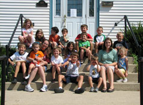

|
|
Harmony offers a Religious Exploration (RE) program for children ages three and older. Our RE
program promotes positive self identity, peer relationships, and community service. Children
have the opportunity to explore religion and character education in our interactive RE
classes while their parents attend the service. Each class focuses on an age-appropriate
theme, and children can expect to have fun while engaging in activities such as music,
crafts, literature, games, demonstrations, hands-on experiences, discussion, and planning
for service activities. All of our teachers, who are also parents, bring unique talents to
every class. For more information on our RE program, contact us
at info@harmonyuu.org.
- Seedlings
- This class is for preschoolers and kindergarteners, and it introduces children to an RE class environment through crafts, games and literature. Kids attending this class are often excited to hear a familiar Berenstain Bears or Franklin story that teaches positive character traits.
- Apple
- The Apple Class, for first and second graders, consists of three modules spread across the year:
- Living the Seven Principles: Children learn the core values of Unitarian Universalism
- The World Around Us: Children study engaging (often seasonal) topics from
around the world – science, culture, holidays, and mythology, to name just a few
- Building Character: Children take the character traits they learned in
Seedlings class to a more advanced level
- Oak
- This class, for third through fifth graders, consists of four modules spread across the year:
- Seven UU Principles: Students learn the core values of Unitarian Universalism in a more in-depth way
- Spirituality Around the World: Learning about how UU and other world
religions handle specific topics such as morality, the beginning of the universe, or
the idea of the afterlife
- Social Justice Awakenings: Oak class members learn about social justice
issues such as hunger or the environment and also work on outreach projects
- Thinking Critically: The children work on developing an understanding of ethics,
logic, and critical thinking
- Sequoia
- The Sequoia covenant group was developed to prepare middle school-aged students for becoming full Harmony adult members when they turn 15 years old. These dedicated students experience a mix of class time and participation in Sunday services with age-appropriate discussion groups as they learn from and support each other. It is our goal to foster a close-knit and accepting group of tweens and teens who befriend and support each other through the tough times of adolescence.
“We are Unitarian Universalists
With minds that think
Hearts that love
And hands that are ready to serve
Together, we protect our Earth
And work for peace and friends in the world.”
|

|